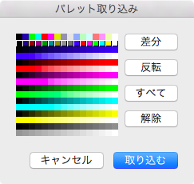

ペースト
本ツールでは、クリップボードに NSPNGPboardType があればペースト可能とします。
また、本ツールによる独自 CHUNK がある場合はそれらの内容も取り込みます。
本ツールでペースト時に取り込む CHUNK は次のものです。
| CHUNK | 名称 | 役割 |
|---|---|---|
| IHDR | ヘッダ | カラータイプは３（index color）で、インターレース無しでなければなりません。 ペーストする画像サイズはこの CHUNK に記述している値を用います。 |
| PLTE | パレット | 記述している値は先頭から順に各色に対する色要素として用います。 ２５６色分に足りない場合はそこまでの値を取得します（足りない分は本ツールの初期値があたります）。 |
| tRNS | 透明 | 記述している値は先頭から順に各色に対する色補助属性の透明として用います。 ０であれば透明、２５５であれば不透明と解釈します。中間値の場合も不透明として扱いますが、彩度がない（RGB の各値が同じ）場合はその値を明るさとみなして、RGB の各値に読み替えます（このことが、彩度無しを透明度にして保存している場合の tRNS CHUNK の解釈ということになります）。 ２５６色分に足りない場合はそこまでの値を取得します（足りない分は不透明があたります）。 |
| drOP | 非使用 独自 CHUNK |
記述している値は先頭から順に各色に対する色補助属性の非禁止（吸い取りを禁止）として用います。 |
| maSK | マスク 独自 CHUNK |
記述している値は先頭から順に各色に対する色補助属性のマスク（上塗りを禁止）として用います。 |
| IDAT | 画像 | ペーストする画像としてこの CHUNK の内容を用います。 |
| IEND | 終端 | クリップボードからペーストするデータ列の終端です。ここから先の内容は読み込みません。 |
パレット取り込み

浮き出したような表示になっている場合に、その色を取り込みます。
パレット取り込みを行うと、色要素・色補助属性を取り込んだ内容で上書きします。
- 差分
編集中の画像とクリップボードの画像がそれぞれ持つパレットの内容に差がある分を自動的に選択状態とします。 - 反転
現在の選択状態を反転します。 - すべて
すべての色を選択状態にします。 - 解除
すべての色を非選択状態にします。